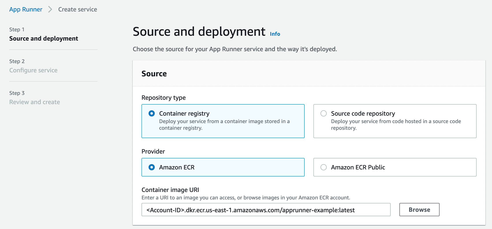
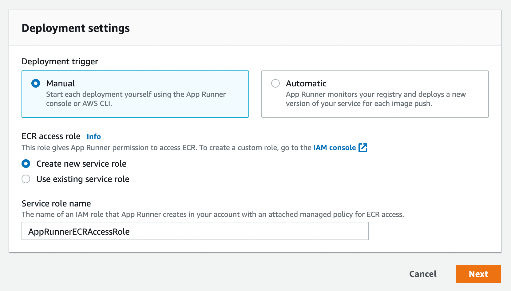
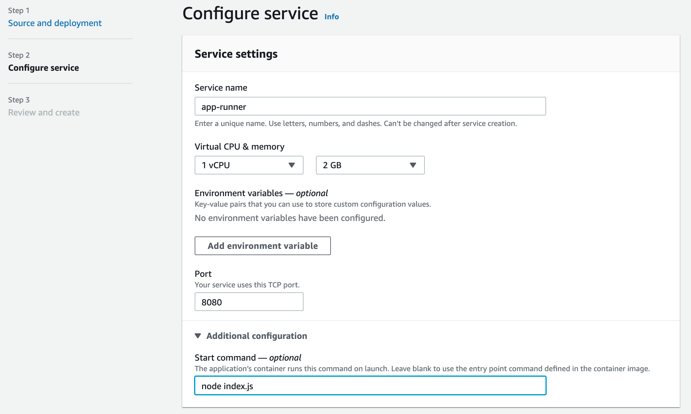

AWS App Runner is a fully managed service that makes it easy for developers to quickly deploy containerized web applications and APIs, at scale and with no prior infrastructure experience required.
One can deploy their application as a service from GitHub or deploy from ECR if the app is already containerized. Creating the App Runner Service from GitHub can easily be done by connecting the GitHub Repository to the App Service from the AWS Console. For ECR, there are a couple of steps to be done to get our containerized app into ECR before we can create App Runner Service from it.
Create ECR Repository
To store and maintain the containerized application within AWS, we would need to create a repository in AWS ECR. We can use aws cli to create a repository or it can be created on AWS Console.
aws ecr create-repository --repository-name app-runner-example --image-scanning-configuration scanOnPush=true --profile <AWS_PROFILE> --region <region>Build Docker Image
Assuming you have a docker config or Dockerfile at the root directory of the project, you can run the below command to build the image.
docker build -t app-runner:1 .PS: If you are on Apple's M1 Chip and trying to build the docker image, then the service might not run properly, since the M1 chip is ARM and Fargate/App Runner will run on x86/64 Architecture. You can find more details on that in this StackOverflow thread
Tag Docker Image
Tag the built image with the ECR URL. Here you would also need to specify the tag that would be saved in the ECR Repository.
docker tag app-runner:1 <AWS-ACCOUNT-ID>.dkr.ecr.<region>.amazonaws.com/app-runner-example:latest
Authorizing Docker to push the Container Image to ECR
We will have to authorize the docker cli to push the image into the ECR repository. To do that, we need to use the below aws cli command to get the authentication token and pass it to the docker login command.
aws ecr get-login-password --region <region> | docker login --username AWS --password-stdin <AWS-ACCOUNT-ID>.dkr.ecr.<region>.amazonaws.com
Push to ECR
Once the login is successful. You can use docker push to push the local image into ECR. Since we are tagging the image as the latest, the previous images would be untagged in ECR, and pushed image would be tagged as latest.
docker push <AWS-ACCOUNT-ID>.dkr.ecr.<region>.amazonaws.com/app-runner-example:latest
Create App Runner from ECR
Now that we have our container image in ECR, we can go to App Runner Console to create a service.

You would need to create/assign a role to App Runner which will give necessary access to ECR for pulling the container image.

Finally, you have to specify the name, CPU/Memory required for your app, and port. Optionally, if you have no mentioned the start command on the Dockerfile you can provide it here.

Create App Runner through CloudFormation
Currently, App Runner Service can only be created through AWS Console, Cli, or CloudFormation. We have included a one-click deployment button below that would deploy the App Runner Service for a given ECR URL.
Reference
This post was originally published on AntStack's Blog.